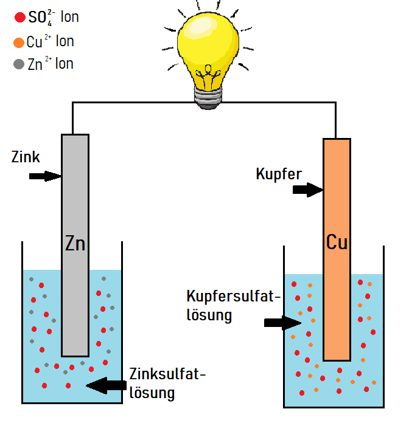
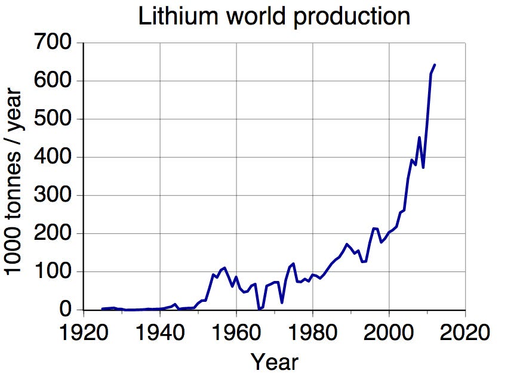
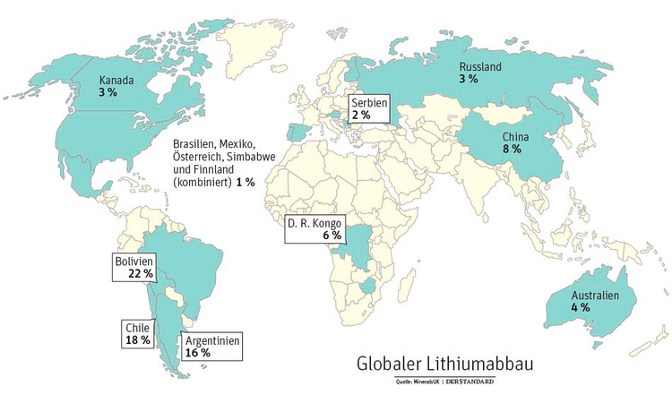
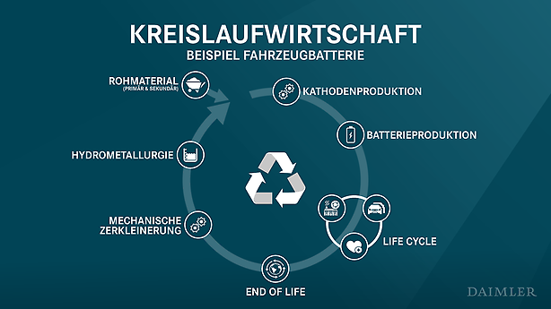
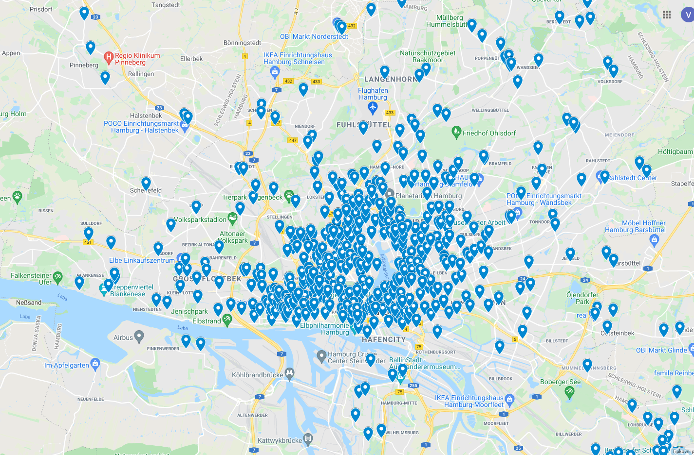
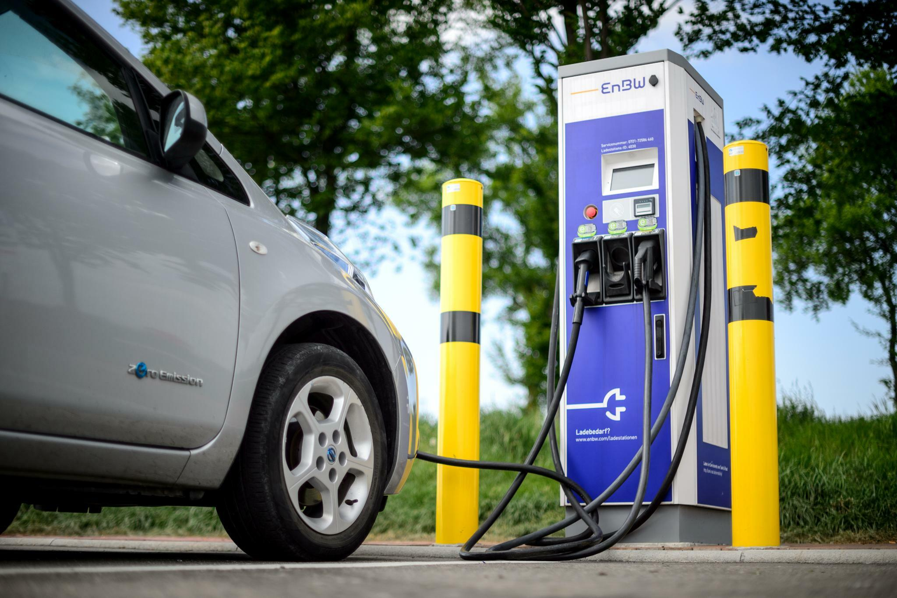

Was ist eine Batterie?
Eine Batterie ist ein Gerät, das chemische Energie speichert und in elektrische Energie umwandeln kann. Die Hauptbestandteile einer Batterie sind: Kathode, Anode und Elektrolyt.
Um besser zu verstehen, wie eine Batterie funktioniert, werfen wir einen Blick auf die galvanische Zelle. Eine galvanische Zelle ist ein Gerät, das in der Lage ist, durch eine chemische Reaktion elektrischen Strom zu erzeugen. Batterien bestehen aus einer oder mehreren Galvischen Zellen. Unten sehen wir ein Foto einer Zelle.
Dies ist eine galvische Zelle, genauer gesagt eine spezifische Art von galvischer Zelle, Daniell-Element. Sie besteht aus zwei verschiedenen Lösungen (Zinksulfatlösung (aq) und Kupfersulfatlösung (aq)), zwei verschiedenen Metallen und einem Draht, der sie verbindet.
Zinksulfat-Reaktion in Wasser
H2O + ZnSO4 → Zn2+ + SO42-
Kupfersulfat-Reaktion in Wasser
H2O + CuSO4 → Cu2+ + SO42-
In beiden Lösungen bilden sich Ionen. Links Zn2+ und SO42- Ionen und rechts Cu2+ und SO42- Ionen. Diese Art von Lösungen, bei denen die meisten gelösten Stoffe als Ionen vorliegen, werden Elektrolyte genannt, wie bereits erwähnt, einer der Hauptbestandteile der Batterie.
Auf der linken Seite sehen wir ein Stück Zink(Zn)-Metall in einer Zinksulfat-Lösung und auf der rechten Seite sehen wir Kupfer(Cu) in einer Kupfersulfit-Lösung. Wenn diese beiden Metalle mit dem elektrischen Draht verbunden sind, treten chemische Reaktionen auf. Genauer gesagt wird die Reaktion in zwei Halbreaktionen geteilt. Diese Reaktionen sind Oxidation und Reduktion oder einfach Redoxreaktion genannt.
Eine Oxidations Reduktions Reaktion ist eine Art chemischer Reaktion, bei der Elektronen zwischen zwei Spezies übertragen werden.Cu2+ Ionen in Kupfersulfatlösung haben größere elektronegativität als Zn2+ Ionen in Zinksulfatlösung. Schauen wir uns nun an, was passiert, wenn wir diese beiden Metalle verbinden.
Bild des Daniell-Elements mit Atom/Ion-Darstellung. (ohne SO42- Ionen, weil sie jetzt nicht wichtig sind).
Cu2+ Ionen in Kupfersulfatlösung haben eine größere Elektronegativität als Zn2+ Ionen und daher reagiert Zink(Zu) zu Zn 2+ + 2e - . Dieser Vorgang wird als Oxidation bezeichnet.
Oxidation von Zink
Zn(s) → Zn2+(aq) + 2e-
Diese 2 Elektronen fließen dann vom Zinkmetall zur Kupfersulfatlösung und erzeugen so elektrischen Strom.
Elektronen fließen zu Cu2+ Ionen.
Eines der Cu2+ Ionen reagiert mit diesen 2 Elektronen. Dieser Teil wird als Reduktion von Cu2+ Ionen bezeichnet.
Reduktion von Cu2+ Ion
Cu2+(aq) + 2e- → Cu(s)
Dadurch entsteht ein neues Kupferatom. Und so fließen Elektronen von einer Seite zur anderen.
Anode (negative Elektrode) ist ein Ort, an dem Oxidation stattfindet (hier Zinkmetall) und Kathode ist der Ort, wo Reduktion stattfindet (hier Kupfermetall).
Es ist Quiz Zeit!
Lithium und Kobalt Lagerstätten
So grün Lithium-Ionen-Batterien auch erscheinen mögen, sie haben schlimme Folgen für Mensch und Planet.
Die Gewinnung der Rohstoffe, hauptsächlich Lithium und Kobalt, erfordert große Mengen an Energie und Wasser. Darüber hinaus findet die Arbeit in Minen statt, in denen Arbeiter(darunter auch Kinder im Alter von sieben Jahren) oft unsicheren Bedingungen ausgesetzt sind.
 Rund ein Drittel des weltweiten Lithiums stammt aus Salinen in Argentinien, Bolivien und Chile, wo das Material in einem ansonsten trockenen Gebiet mit riesigen Wassermengen gewonnen wird. China ist derzeit der Marktbeherrscher bei der Lithiumproduktion. Im Jahr 2013 kam China dazu den Markt und begannen an vielen Orten mit dem Bergbau, und sie verursachten viele Probleme. In Tibet beispielsweise vergiftete ein giftiges Chemikalienleck aus einer der Minen im Jahr 2016 den örtlichen Lichu-Fluss.

Kobalt ist ein wichtiger Bestandteil der Elektrode einer Batterie, aber rund 70 % dieses Elements finden sich in nur einem Land: der Demokratischen Republik Kongo in Afrika.Männer, Frauen und Kinder arbeiten ohne die einfachste Schutzausrüstung wie Handschuhe und Gesichtsmasken.Dort atmen sie kobalthaltigen Staub ein, der beim Arbeiten in einsturzgefährdeten Tunneln tödliche Lungenerkrankungen verursachen kann.

Viele Länder sind sich bewusst, dass der Bergbau verantwortungsbewusster und nachhaltiger betrieben werden muss. Die Europäische Union beispielsweise verlangt von Unternehmen, Batterien am Ende ihrer Lebensdauer zu sammeln und entweder einer Wiederverwendung zuzuführen oder sie zum Recycling zu zerlegen.
Es ist Quiz Zeit!
Rezyklierung
Batterien sind wertvoll und recycelbar, aber aufgrund technischer, wirtschaftlicher und anderer Faktoren. Weniger als 5 % werden heute recycelt.

Wiederaufladbare Lithium-, Lithium-Ionen- und Zink-Luft-Batterien sollten recycelt werden. Neben „herkömmlichen“ Akkus wie AA oder AAA sollten auch Akkus aus Haushaltsgegenständen wie Kameras, Handys, Laptops und Elektrowerkzeugen recycelt werden. Aber wie bereits erwähnt, werden nur 5 % der Batterien recycelt.
Aber wie hoch sind die Kosten für diese 5 %, die recycelt werden, und ist es überhaupt profitabel?
Die Kosten für den Abbau der Batterie ähneln denen von Bleisäure, hauptsächlich weil für den Prozess ähnliche Geräte verwendet werden und die Betriebskosten vergleichbar sind – etwa 100 bis 200 US-Dollar pro Tonne der schwarzen Masse. In Zukunft könnte direktes Recycling rentabel sein, wenn Die Technologie kann zu einer Verarbeitung im großen Maßstab entwickelt werden, die durch das Erreichen des Endes der Lebensdauer von EV-Batterien in großen Mengen ermöglicht wird. Direktes Recycling soll sauberer sein als ältere Verfahren, bei denen das Material geschmolzen wird. Derzeit erzielen die meisten Recyclingunternehmen jedoch keine bis sehr geringen Gewinne.

Wie werden Batterien recycelt?
Die Batterie wird zunächst in ihre Bestandteile getrennt: Kunststoff, Säure, Schwermetall. Batterien werden oft mit Hochgeschwindigkeitshämmern oder Schreddern zerkleinert. Die Batteriesäuren oder andere flüssige Elektrolyte werden abgelassen und zu Wasser neutralisiert . Die zerbrochenen Batterieteile gelangen in einen Bottich, in dem das Blei und die schweren Materialien nach unten fallen, während der Kunststoff nach oben steigt. An dieser Stelle werden die Polypropylene weggeschöpft und die Flüssigkeiten abgezogen, wobei Blei und
Schwermetalle zurückbleiben. Jedes der Materialien beginnt dann seine eigene Recyclingreise.
Aber was passiert mit den leeren Batterien, sind auch leere Batterien recycelbar? Normale Batterien: Normale Alkali-, Mangan- und Kohle-Zink-Batterien gelten nicht als Sondermüll und können mit dem normalen Hausmüll entsorgt werden. Andere gebräuchliche Einweg- oder wiederaufladbare Batterien wie Lithium- und Knopfbatterien sind recycelbar, aber der Zugang zum Recycling ist möglicherweise nicht an allen Standorten verfügbar. Um diese Frage zu beantworten, können einige recycelt werden und andere nicht.
Wer macht sie und wo werden sie hergestellt? Laut Benchmark Mineral Intelligence, einem bekannten Datenanbieter, dominiert China heute die Batterieproduktion mit 93 „Gigafactories“, die Lithium-Ionen-Batteriezellen herstellen, gegenüber nur vier in den Vereinigten Staaten.
Beim Recycling von Lithium-Ionen-Batterien ist der Prozess selten einfach. Die verbrauchten Lithium-Ionen-Batterien werden zerlegt, um Kunststoff, Stahlgehäuse und Elektronikschrott von der Zelle zu trennen. Anschließend werden die Zellen fünf Stunden lang bei einer Temperatur von 500 °C behandelt. Der Elektrolyt in der Zelle wird abgebaut und flüchtig.
Es ist Quiz Zeit!
Ladenstationen
Eine leere Batterie ist das häufigste und offensichtlichste Problem bei Elektrofahrzeugen. In Hamburg gibt es 7000 zugelassene Elektrofahrzeuge und insgesamt 1300 Ladepunkte. Mit der Zeit wird der Bedarf an Ladepunkten steigen, da die Produktion von Elektrofahrzeugen steigt.
Eine zuverlässige Ladestation bekommen Sie als Basismodell ab etwa 600 Euro. Je nach Ausstattung und Zusatzfunktionen kann sich der Preis natürlich erhöhen. Ein nicht ganz unbedeutender Kostenfaktor ist die fachgerechte Installation der Ladestation durch einen qualifizierten Elektroinstallateur.
Ein großes Problem mit dem sogenannten “Fast chargers” ist die Überhitzung. Der Autoboden wird sehr warm, da die Batterien mit viel Kraft und hohen Geschwindigkeiten geladen werden. Firmen wie Tesla und Ford versuchen Lösungen für dieses Problem zu finden da sie am stärksten davon betroffen sind.
Eine gut gepflegte Batterie kann nach aktuellen Schätzungen 10-20 Jahre halten, aber wenn immer ein “Fast charger” zum Laden und Aufladen der Batterie verwendet wird, schätzt die aktuelle Batterie eine Batterielebensdauer von 6 bis 8 Jahren.